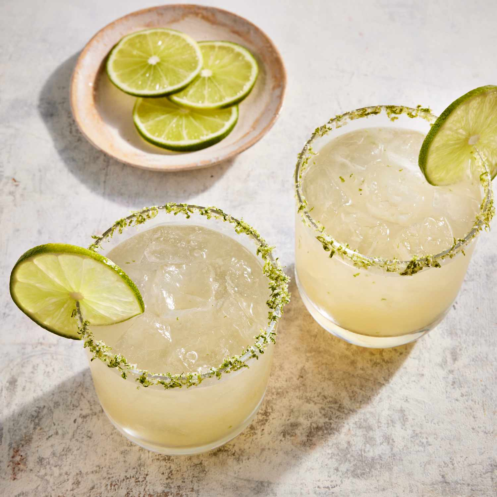
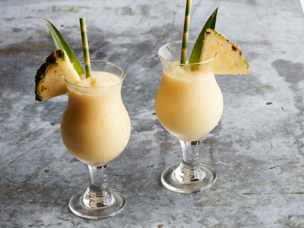
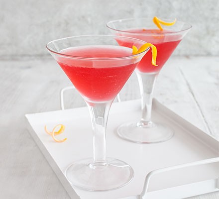
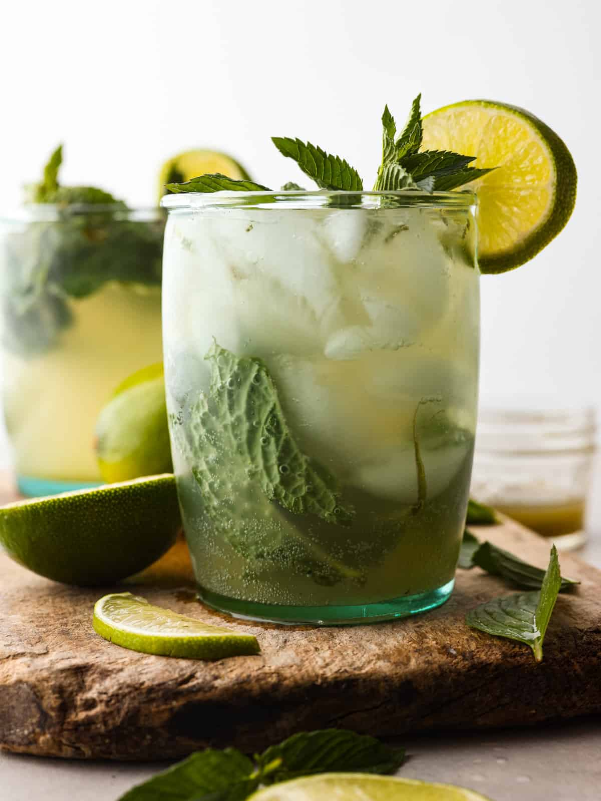
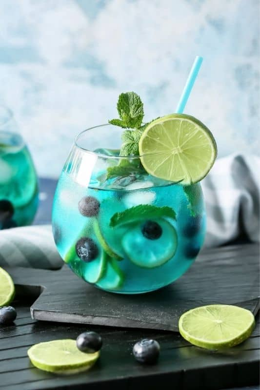

Margarita
Main Ingredients: Tequila, Triple Sec, Lime Juice
Recipe:
- Step 1: In a shaker, combine 2 oz Tequila, 1 oz Triple Sec, and 1 oz Lime Juice.
- Step 2: Add ice and shake well.
- Step 3: Strain into a margarita glass and garnish with a lime wheel.

Pina Colada
Main Ingredients: Coconut Cream, Pineapple Juice, White Rum
Recipe:
- Step 1: Blend 3 oz Coconut Cream, 3 oz Pineapple Juice, and 2 oz White Rum with crushed ice.
- Step 2: Pour into a chilled glass and garnish with a pineapple slice and cherry.

Cosmopolitan
Main Ingredients: Vodka, Triple Sec, Cranberry Juice, Lime Juice
Recipe:
- Step 1: In a shaker, combine 1.5 oz Vodka, 0.5 oz Triple Sec, 1 oz Cranberry Juice, and a splash of Lime Juice.
- Step 2: Shake well with ice and strain into a martini glass.
- Step 3: Garnish with a twist of lime or an orange slice.

Virgin Mojito
Main Ingredients: Fresh Lime Juice, Mint Leaves, Sugar, Soda Water
Recipe:
- Step 1: Muddle 3-4 fresh mint leaves and 1 oz fresh lime juice with 2 tsp sugar.
- Step 2: Add ice and top up with soda water. Stir well.
- Step 3: Garnish with a mint sprig and a lime wheel.

Mojito
Main Ingredients: White Rum, Fresh Lime Juice, Mint Leaves, Sugar, Soda Water
Recipe:
- Step 1: Muddle 6-8 fresh mint leaves and 0.5 oz fresh lime juice with 2 tsp sugar.
- Step 2: Add 2 oz white rum and ice. Stir.
- Step 3: Top up with soda water and garnish with mint and a lime wedge.